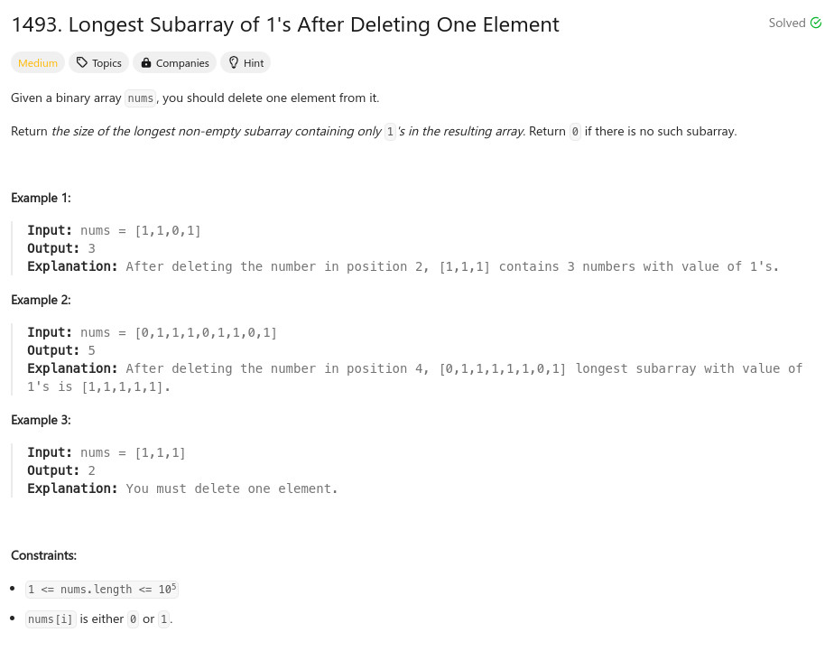

參考資訊：
https://www.cnblogs.com/cnoodle/p/17513018.html
題目：

int max(int a, int b)
{
return a > b ? a : b;
}
int longestSubarray(int* nums, int numsSize)
{
int r = 0;
int cnt = 0;
int left = 0;
int right = 0;
for (right = 0; right < numsSize; right++) {
if (nums[right] == 0) {
cnt += 1;
}
while (cnt > 1) {
if (nums[left] == 0) {
cnt -= 1;
}
left += 1;
}
r = max(right - left + 1, r);
}
return r - 1;
}